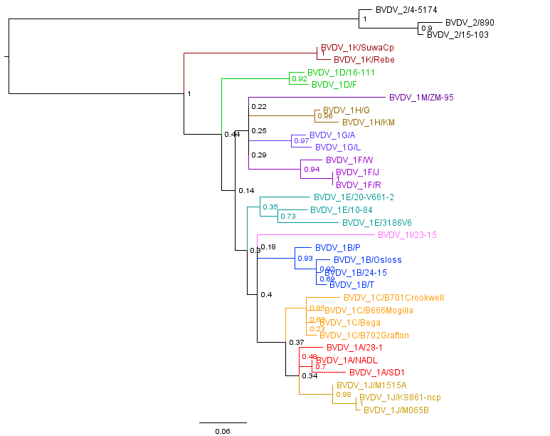
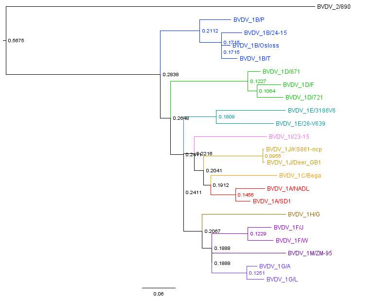

Bovine Viral Diarrhoea Virus
Complete Genomes
The Bovine Viral Diarrhoea Virus is a Pestivirus, with the same structure as Classical Swine Fever and Border Disease viruses, see http://viralzone.expasy.org/viralzone/all_by_species/39.html
The BVDV genome encodes a single ORF poly protein, and this poly protein is split into individual proteins during the viral lifecycle.
The most commonly sequenced regions are the 5' UTR (untranslated region), the surface glycoprotein gene E2, and the non-structural protein coding gene Npro.
Complete genome and partial Bovine Viral Diarrhoea sequences were downloaded from GenBank on 10 April 2014 (Type 1) and 25th Oct 2013 (Type 2).
Initial processing to extract the complete genome sequences was performed,
and the complete genomes were further split into Types 1 and 2 manually:
Table 1: Complete with original full names
| Type | Number of Complete Genomes | FASTA |
| Type 1 | 52 | bvdv completeGenome type1 |
| Type 2 | 27 | bvdv completeGenome type2 |
Nucleotide sequences were manually inspected and aligned using ClustalW in BioEdit.
Reference Sequences
A Phylogenetic study on BVDV in the UK has been performed:
"A phylogenetic analysis of Bovine Viral Diarrhoea Virus (BVDV) isolates from six different regions of the UK and links to animal movement data"
Booth et al. Veterinary Research 2013, 44:43
Open access paper
In this paper reference strains are used to provide background sequences to the study:
Table 2: Reference sequences used in Booth et al with original full names
| Region | Number of Sequences | FASTA | NJ Tree |
| 5' UTR | 33 | 5' UTR Sequences | 5' UTR Tree |
| Npro | 22 | Npro Sequences | Npro Tree |
Table 3: Reference sequences used in Booth et al with short names
| Region | Number of Sequences | FASTA | NJ Tree | ML Tree |
| 5' UTR | 33 | 5' UTR Sequences | NJ 5' UTR Tree | ML 5' UTR Tree |
| Npro | 22 | Npro Sequences | NJ Npro Tree | ML Npro Tree |
Figure 1: Maximum Likelihood Trees (GTR model, 4 gamma rates between sites, 100 bootstraps)
of Reference Sequences in Booth et al in FigTree
Click on the images to zoom
| 5' UTR References | Npro References | ||
|  | 
| Click to download 5' UTR in FigTree
| Click to download Npro in FigTree
| |
BVDV in the UK
A Phylogenetic study on BVDV in the UK has been performed:
"A phylogenetic analysis of Bovine Viral Diarrhoea Virus (BVDV) isolates from six different regions of the UK and links to animal movement data"
Booth et al. Veterinary Research 2013, 44:43
Open access paper
Table 3: Sequences from the UK with original full names
| Region | Number of Sequences | FASTA | NJ Tree |
| 5' UTR | 418 | 5' UTR Sequences | 5' UTR Tree |
| Npro | 117 | Npro Sequences | Npro Tree |
| E2 | 30 | E2 Sequences | E2 Tree |

{kind=link}
{kind=link}